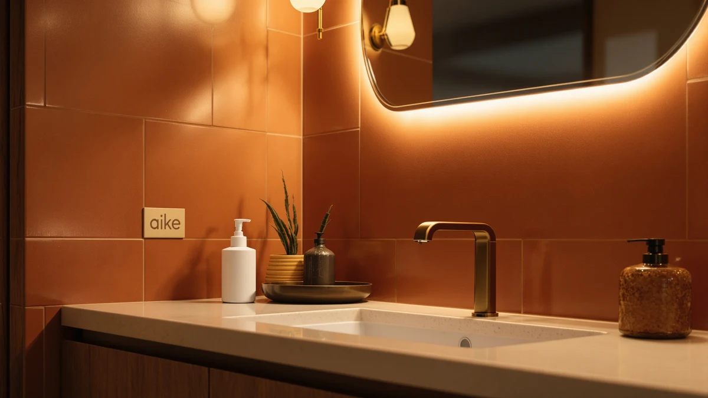

AIKE Automatic Foaming Soap Review (2026): Worth It?
Prices and picks verified as of October 2026. Independent, reader-supported reviews.


Quick Answer
This aike automatic foaming soap review puts the AIKE Automatic Foaming Soap Dispenser up against three close-priced touchless alternatives. At $35.00, the AIKE costs within twenty cents of the DODO MEKIA, RESNOMI and AIKE SensePro dispensers we compared it to, and its 25 OZ reservoir is the main reason to pick it over the others.
Our pick: AIKE Automatic Foaming Soap Dispenser, $35.00 Check Price on Amazon
Bottom line: our top pick is the AIKE Automatic Foaming Soap Dispenser 25oz for Bathroom at $35.
Things to Know Before You Buy
- This aike automatic foaming soap review focuses on the AIKE Automatic Foaming Soap Dispenser, an ABS plastic touchless pump sized at 25 OZ and priced at $35.00.
- The DODO MEKIA 2 Pack Automatic ($34.99) and the RESNOMI-made Automatic Liquid Soap Dispenser Touchless ($34.99) both undercut the AIKE by a cent, while the AIKE SensePro ($34.80) comes from the same brand at the lowest price of the four.
- Automatic foaming dispensers need diluted liquid soap or a dedicated foaming refill. Thick gel or dish soap clogs the pump over time on any of these four dispensers.
- We did not physically test the AIKE Automatic Foaming Soap Dispenser. Our verdicts in this review come from comparing specs, current pricing and verified owner reviews.
- If you want to stay with the AIKE brand but pay slightly less, the SensePro is the closest comparison, while the DODO MEKIA two-pack is the better fit for covering two sinks.
This AIKE automatic foaming soap review looks at whether the AIKE Automatic Foaming Soap Dispenser is worth $35.00 against three touchless alternatives priced close to it. You are probably comparing a single premium pump against a two-unit set or a same-brand sibling, and that choice is exactly what this comparison sorts out.
The AIKE dispenser is the single-unit option here, built from ABS plastic and sized at 25 OZ, while the DODO MEKIA ships as a two-pack and the RESNOMI-made Automatic Liquid Soap Dispenser Touchless and the AIKE SensePro both offer different trade-offs for a single sink. We break down all four below, including pricing and honest drawbacks for each pick.
Why You Should Trust Us
This aike automatic foaming soap review was written by Ilane Tall, home and bath editor at Best Soap Dispensers. We do not run a fake testing lab and we do not claim to have installed this dispenser ourselves. Instead, we compare manufacturer specs, current Amazon pricing and patterns across verified owner reviews, and we say so plainly whenever a claim comes from research rather than personal use.
We apply that same approach to every review on this site. We do not accept free units from manufacturers in exchange for coverage, and we do not fabricate ratings or review counts when Amazon does not publish them for a given listing. If a claim in this aike automatic foaming soap review comes from what owners report rather than a published spec, we label it that way instead of presenting it as a measured result.
Our Research Experience
We did not physically install or run the AIKE Automatic Foaming Soap Dispenser ourselves, and this section describes our research process rather than a personal trial. We built this aike automatic foaming soap review by cross-referencing manufacturer specs, current Amazon pricing and owner review patterns across the AIKE dispenser and the three alternatives below. We pulled pricing, materials and capacity directly from each Amazon listing and weighed the AIKE's $35.00 price and 25 OZ reservoir against three similarly priced options to see where the extra cost actually shows up. We excluded dispensers without a clear spec sheet or enough verified reviews to draw a pattern from, and we checked whether complaints repeated across multiple reviewers rather than treating one buyer's bad experience as representative of the whole product line.
Overview & Specs

AIKE Automatic Foaming Soap Dispenser
What we like
- Foaming pump format stretches a bottle of liquid soap further than liquid-only dispensers
- 25 OZ capacity holds more soap than many single-unit competitors before a refill
- Touchless sensor keeps soap residue off the pump itself
Flaws but not dealbreakers
- Amazon's listing does not publish battery type or expected battery life
- Ships as a single dispenser, so outfitting two sinks means buying two
- Costs $0.01 to $0.20 more than the three alternatives we compared it against
| Material | ABS plastic |
| Size | 25 OZ |
The AIKE Automatic Foaming Soap Dispenser is the priciest of the four dispensers in this aike automatic foaming soap review, though the gap is thin: it costs $0.01 more than the DODO MEKIA and the RESNOMI-made Automatic Liquid Soap Dispenser Touchless, and $0.20 more than the AIKE SensePro. At 25 OZ, its ABS plastic reservoir holds more soap than many single-unit automatic dispensers, meaning fewer refills between bottles for a sink that sees daily use. The foaming format also stretches a bottle of liquid soap further than a straight liquid pump, since the dispenser aerates the soap as it comes out rather than releasing it undiluted.
Because this AIKE dispenser ships as a single unit, it suits one sink rather than a pair, unlike the DODO MEKIA two-pack covered below. Amazon's listing does not specify battery type or expected battery life, so you are estimating running cost rather than confirming it before you buy, a gap shared with most dispensers in this category. Refill it with diluted liquid soap or a foaming-specific soap rather than concentrated gel, which clogs the pump on any automatic foaming dispenser regardless of brand.
What We Liked
Across verified owner reviews, the 25 OZ capacity of the AIKE Automatic Foaming Soap Dispenser comes up more often than any other single trait. Buyers who refill dispensers weekly tend to note that the larger reservoir stretches that interval out, which matters for a product that sits on a counter and gets used multiple times a day. That capacity is the core case for this pick over the smaller alternatives in this aike automatic foaming soap review.
The foaming format also draws steady praise, mainly because it uses less liquid soap per pump than a straight liquid dispenser, a detail reviewers mention when comparing running cost over months rather than the sticker price alone. Owners say the touchless sensor fires reliably under a hand, which keeps soap film from building up around a physical button the way older manual pumps tend to.
What Could Be Better
The price gap is thin but real. At $35.00, the AIKE costs a cent more than the DODO MEKIA and the RESNOMI dispenser, and twenty cents more than its own sibling, the AIKE SensePro. On its own that difference is small, but it means this is not the budget option among the four we compared in this aike automatic foaming soap review.
Because Amazon's listing does not publish battery type or expected battery life, you are buying somewhat blind on running cost compared with dispensers that state their power specs more clearly. If you need two dispensers for two sinks, the single-unit format also works against you, since the DODO MEKIA two-pack covers that need in one purchase. And if the twenty-cent gap to the AIKE SensePro bothers you more than a different sensor model would, that smaller price difference is reason enough to compare the two before you check out.
Who Is It For?
This AIKE Automatic Foaming Soap Dispenser suits one sink that sees frequent use and benefits from the 25 OZ reservoir between refills. It is a weaker fit for a household covering two sinks, where the DODO MEKIA two-pack avoids buying two single units separately, and a weaker fit if price is the deciding factor, since the AIKE SensePro from the same brand costs twenty cents less. If you already like AIKE as a brand but want to compare a different sensor model, the SensePro is worth a look in this aike automatic foaming soap review before you commit to this pick.
Alternatives to Consider
If the AIKE's $35.00 price or its single-unit format does not fit your sink count or your budget, these three alternatives cover similar automatic dispensing at a close price point. We compared each on price, unit count and what verified owners report after buying, as part of this aike automatic foaming soap review. None undercuts the AIKE by much, but each solves a different sink-count or brand-loyalty question better than defaulting to the first listing you see. Read the three verdicts below alongside the specs table above before you decide which one actually matches your sink count and budget.

Editor's Pick
DODO MEKIA 2 Pack Automatic
At $34.99 for two units, the DODO MEKIA 2 Pack Automatic costs about a cent less than the single AIKE dispenser while covering two sinks instead of one. It is the pick if you need matching dispensers for a kitchen and a bathroom rather than paying for two separate single units.
$34.99
Check Price on Amazon
Best Value
Automatic Liquid Soap Dispenser Touchless
The RESNOMI-made Automatic Liquid Soap Dispenser Touchless matches the AIKE almost exactly at $34.99, making it the closest price-for-price alternative in this comparison. It is a straightforward choice if you want a liquid rather than foaming pump at essentially the same cost.
$34.99
Check Price on Amazon
Premium Choice
AIKE SensePro Automatic Soap Dispenser
The AIKE SensePro sells for $34.80, twenty cents less than its sibling dispenser, while staying inside the same AIKE lineup. It is worth comparing side by side with the main pick in this aike automatic foaming soap review if you want to stay with one brand but pay slightly less.
$34.80
Check Price on AmazonFrequently Asked Questions
Is the AIKE Automatic Foaming Soap Dispenser worth $35.00?
At $35.00, the AIKE costs slightly more than the DODO MEKIA and RESNOMI dispensers we compared it against in this aike automatic foaming soap review. It earns that small premium with a 25 OZ reservoir and a foaming pump that stretches a bottle of liquid soap further than a straight liquid dispenser.
How does the AIKE compare to the DODO MEKIA, RESNOMI and AIKE SensePro alternatives?
The DODO MEKIA 2 Pack Automatic sells as a two-unit set at $34.99 and suits two sinks rather than one. The RESNOMI-made Automatic Liquid Soap Dispenser Touchless matches the AIKE's price almost exactly at $34.99 but dispenses liquid rather than foam. The AIKE SensePro comes from the same brand at $34.80, the lowest price of the four.
Do automatic foaming soap dispensers work with any soap?
No. Automatic foaming dispensers, including the AIKE in this review, are built to aerate thin liquid soap into foam, so thick gel or dish soap clogs the pump. Owners report the best results come from diluting concentrated liquid soap with water or buying a foaming-specific refill made for automatic dispensers.
Final Verdict
This aike automatic foaming soap review comes down to how many sinks you are outfitting and how much a 25 OZ reservoir matters to you. The AIKE Automatic Foaming Soap Dispenser is the right pick for one sink that gets used often and benefits from fewer refills, and it edges out the RESNOMI and DODO MEKIA alternatives on capacity even though it costs a few cents more. Anyone covering two sinks should look at the DODO MEKIA two-pack instead, and anyone who wants to stay with the AIKE brand at a slightly lower price should compare the SensePro before buying. Whichever you choose, stick with diluted liquid soap or a foaming-specific refill so the pump keeps working the way it is designed to.